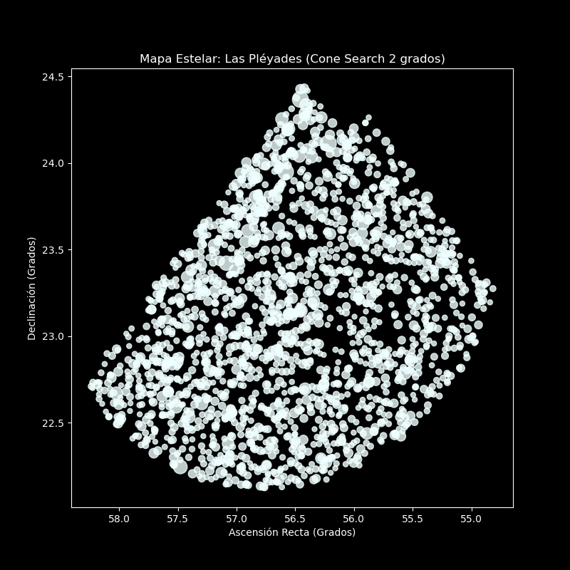
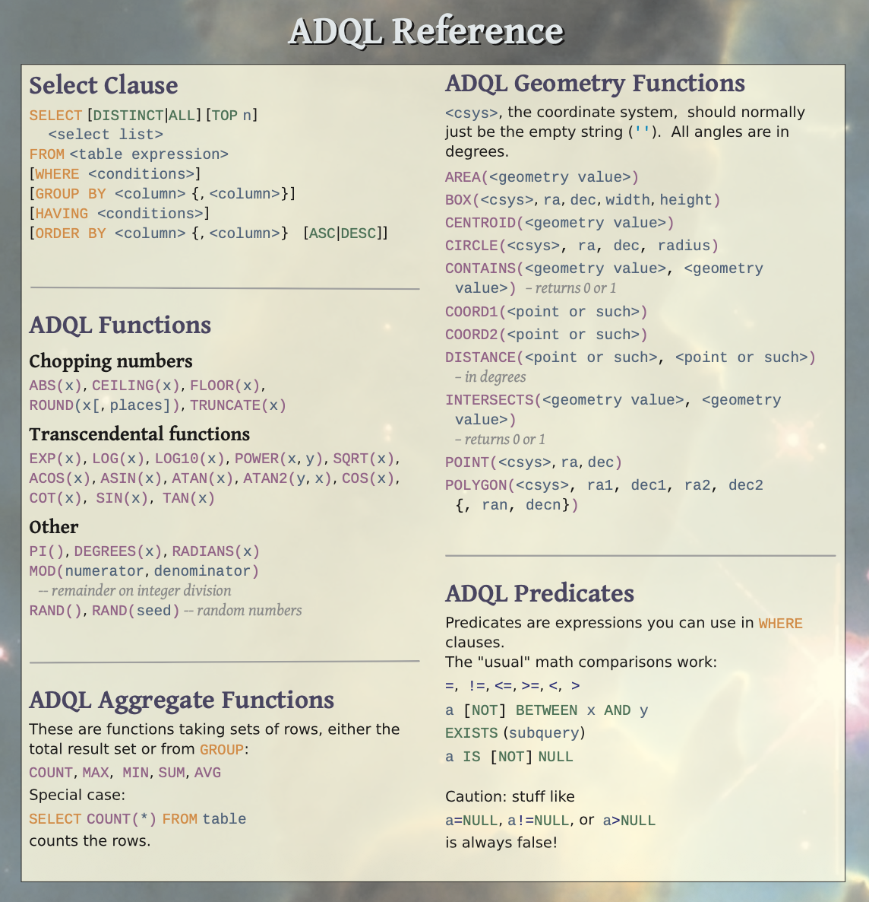
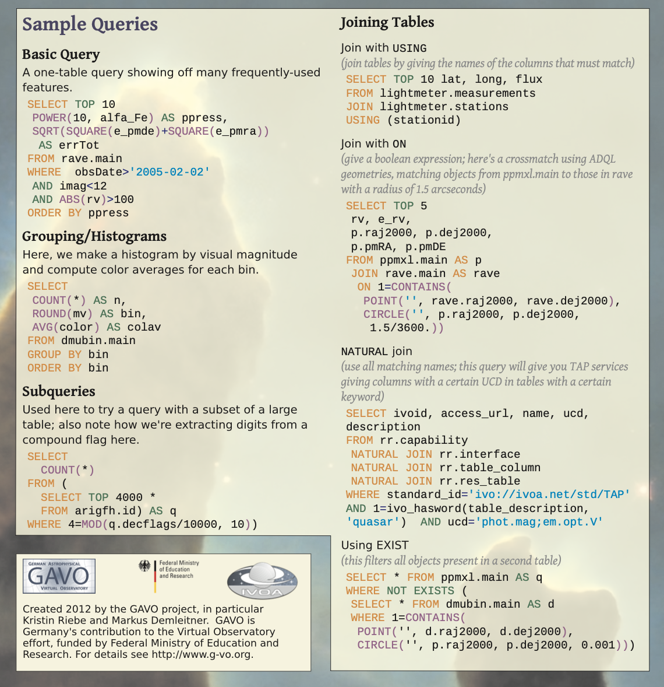

Clase 5: El Observatorio Virtual y Geometría Espacial con ADQL#
Hasta ahora hemos dominado SQL clásico para extraer datos de tablas estándar. Sin embargo, el universo no es una hoja de cálculo plana, es una esfera tridimensional. Cuando intentamos buscar qué estrellas están “cerca” de un cúmulo estelar o queremos superponer dos imágenes del cielo, el SQL tradicional se queda corto.
Aquí entra el ADQL (Astronomical Data Query Language), el lenguaje oficial del Observatorio Virtual (VO).
1. El Protocolo TAP y los Endpoints#
Para usar ADQL, no consultamos bases de datos ordinarias, sino servidores equipados con el protocolo TAP (Table Access Protocol). Estos supercomputadores entienden de coordenadas celestes y proyecciones esféricas.
Endpoints Astronómicos Principales para ADQL#
Nombre del Catálogo |
Interfaz Web |
Endpoint HTTP Base (Para Bash/ |
|---|---|---|
VizieR TAP (Gaia, 2MASS, WISE) |
|
|
NASA Exoplanet Archive |
|
|
(Nota vital: Al usar la consola, los espacios en las consultas ADQL deben reemplazarse por el símbolo
+o%20para que la URL de internet sea válida).
2. El Arsenal Geométrico de ADQL#
ADQL introduce funciones matemáticas espaciales que se ejecutan directamente en los servidores de las agencias espaciales, ahorrándonos descargar catálogos enteros.
A) Definiendo Formas (Geometrías)#
POINT('ICRS', ra, dec): Define un punto exacto en el cielo usando el sistema de referencia ICRS (Ascensión Recta y Declinación en grados).CIRCLE('ICRS', ra, dec, radio): Define un círculo o “cono” visual. El radio se da en grados.
B) Operaciones Espaciales#
CONTAINS(geometria_1, geometria_2): Función lógica. Devuelve1(Verdadero) si la geometría 1 está completamente dentro de la geometría 2.DISTANCE(punto_1, punto_2): Calcula la distancia angular real (en grados) entre dos puntos en la esfera celeste.
3. Ejemplos Prácticos Paso a Paso#
Ejemplo 1: Búsqueda en Cono (Cone Search)#
Queremos encontrar todas las estrellas medidas por Gaia que estén a menos de 1 grado del centro de la Nebulosa de Orión (RA: 83.82, Dec: -5.39).
-- Seleccionamos las columnas de identificación, coordenadas y magnitud G
SELECT Source, RA_ICRS, DE_ICRS, Gmag
-- Del catálogo de Gaia DR3 alojado en VizieR
FROM "I/355/gaiadr3"
-- Donde sea VERDADERO (1) que...
WHERE 1 = CONTAINS(
-- ...el PUNTO individual de la estrella que estamos evaluando...
POINT('ICRS', RA_ICRS, DE_ICRS),
-- ...caiga dentro del CÍRCULO de 1 grado de radio centrado en Orión.
CIRCLE('ICRS', 83.82, -5.39, 1.0)
)
Ejemplo 2: Cross-Matching Extremo (Cruzando Catálogos)#
Queremos saber si las estrellas brillantes de Gaia emiten también en luz infrarroja (Catálogo 2MASS). Le pediremos al servidor que cruce ambos catálogos mediante distancias angulares.
-- Seleccionamos el ID de Gaia, el ID de 2MASS y sus magnitudes
SELECT TOP 50 g.Source, m._2MASS, g.Gmag, m.Jmag
-- Definimos Gaia como nuestra tabla principal 'g'
FROM "I/355/gaiadr3" AS g
-- La unimos (JOIN) con el catálogo infrarrojo 2MASS, llamándolo 'm'
JOIN "II/246/out" AS m
-- La condición de unión espacial: Que las coordenadas de la fuente infrarroja (m)
-- estén en un radio minúsculo de 1 arcosegundo (1/3600 grados) de la posición óptica (g).
ON 1 = CONTAINS(
POINT('ICRS', m.RAJ2000, m.DEJ2000),
CIRCLE('ICRS', g.RA_ICRS, g.DE_ICRS, 1./3600.)
)
4. Pipeline Completo: SQL + ADQL + CLI + Python + Git#
Vamos a construir un flujo de trabajo que automatice una consulta ADQL desde la consola, genere un script de Python al vuelo, grafique los datos y guarde todo en Git. Construiremos un mapa de las Pléyades.
Script Maestro: mapeo_pleyades.sh
# !/bin/bash
# Anunciamos el inicio del proceso
echo "1. Consultando VizieR TAP mediante ADQL..."
# Guardamos la consulta pura. (Centro Pléyades: RA 56.75, Dec 24.11, Radio 2 grados)
ADQL="SELECT TOP 2000 RA_ICRS, DE_ICRS, Gmag FROM \"I/355/gaiadr3\" WHERE Gmag < 15 AND 1=CONTAINS(POINT('ICRS', RA_ICRS, DE_ICRS), CIRCLE('ICRS', 56.75, 24.11, 2.0))"
# Reemplazamos los espacios por '+' usando 'sed' para que la URL no se rompa en internet
URL_ADQL=$(echo $ADQL | sed 's/ /+/g')
# Definimos el Endpoint base de VizieR
TAP_URL="https://tapvizier.cds.unistra.fr/TAPVizieR/tap/sync?request=doQuery&lang=ADQL&format=csv&query="
# Ejecutamos wget combinando el Endpoint y la consulta codificada
wget -q -O pleyades.csv "$TAP_URL$URL_ADQL"
echo "Descarga finalizada: pleyades.csv"
echo "2. Generando script de visualización en Python..."
# Usamos el comando 'cat' para escribir un archivo de Python directamente desde la consola
cat << 'EOF' > graficar_mapa.py
import pandas as pd
import matplotlib.pyplot as plt
# Cargamos el CSV recién descargado
df = pd.read_csv('pleyades.csv')
plt.figure(figsize=(8,8))
plt.style.use('dark_background')
# El tamaño del punto (s) será inversamente proporcional a la magnitud (más brillante = más grande)
plt.scatter(df['RA_ICRS'], df['DE_ICRS'], s=(20-df['Gmag'])**2, color='azure', alpha=0.8)
# Convención astronómica: Invertir el eje de Ascensión Recta
plt.gca().invert_xaxis()
plt.title('Mapa Estelar: Las Pléyades (Cone Search 2 grados)')
plt.xlabel('Ascensión Recta (Grados)')
plt.ylabel('Declinación (Grados)')
plt.savefig('mapa_pleyades.png')
print("Imagen mapa_pleyades.png generada.")
EOF
echo "3. Ejecutando Python..."
# Ejecutamos el script que acabamos de crear
python3 graficar_mapa.py
echo "4. Guardando en Control de Versiones..."
# Inicializamos el repositorio
git init
# Ignoramos el CSV crudo para no saturar GitHub
echo "pleyades.csv" > .gitignore
git add mapeo_pleyades.sh graficar_mapa.py mapa_pleyades.png .gitignore
# Guardamos la versión
git commit -m "Pipeline automático: Cone Search y Mapeo de las Pléyades"
echo "¡Proceso 100% reproducible completado!"
El resultado es:

5. Ejercicios Prácticos en Clase (Nivel Avanzado)#
A continuación, se presentan 4 problemas de investigación. Deberán crear scripts en Bash que contengan la consulta ADQL exacta (formateando espacios con sed), ejecuten el análisis en Python y manejen el versionado en Git.
Ejercicio 1 (Individual): “Mapeando la Galaxia de Andrómeda”#
Andrómeda (M31) se encuentra en RA=10.68˚, Dec=41.26˚
Escribe un script en Bash que use ADQL para extraer las coordenadas (RA_ICRS, DE_ICRS) de estrellas en el catálogo Gaia DR3 (I/355/gaiadr3) en un círculo de 3 grados de radio alrededor de ese punto. Filtra solo estrellas brillantes (Gmag < 16).
El script Bash debe ejecutar un script Python que cargue los datos y use Matplotlib para crear un Scatter Plot del cielo (RA_ICRS vs DE_ICRS). No olvides invertir el eje X. Sube todo a un repositorio de GitHub personal.
Ejercicio 2 (Individual): “El Vecindario Solar Extremo”#
Queremos aislar las estrellas más cercanas a la Tierra.
Escribe un script con una consulta ADQL para el catálogo de Gaia que extraiga Source, Plx (Paralaje) y Gmag. Filtra algebraicamente en ADQL: solo estrellas con una paralaje mayor a 50 milisegundos de arco (
Plx > 50).En Python, convierte la Paralaje a Distancia en Parsecs usando la fórmula D=1000/Plx. Usa Seaborn para crear un Histograma (
sns.histplot) de las distancias. Discute en tuREADME.mdcuántas estrellas lograste encontrar a menos de 10 parsecs.
Ejercicio 3 (Parejas): “Cross-Match Infrarrojo en la Nube de Magallanes”#
Repositorio colaborativo. Trabajen en ramas separadas y fusionen con Pull Request.
(Estudiante A): Escribe el script Bash con ADQL. Debes hacer un JOIN entre Gaia DR3 (I/355/gaiadr3) y el catálogo Infrarrojo AllWISE (II/328/allwise). El punto central es la Gran Nube de Magallanes (RA=80.89˚, Dec=−69.75˚) con un radio de 1 grado. Cruza objetos que estén a menos de 2 arcosegundos (2/3600 grados).
Extrae la magnitud óptica (Gmag de Gaia) y la infrarroja (W1mag de AllWISE).
(Estudiante B): El script Python debe calcular el índice de color Óptico-Infrarrojo (G−W1).
Genera un mapa de densidad topográfico (
plt.hexbin) enfrentando el colorG−W1en el EjeXyGmagen el EjeY.
Ejercicio 4 (Parejas): “Cinemática de Fuga (Runaway Stars)”#
Repositorio colaborativo. Pull Request final.
(Estudiante A): Escribe un Bash script con ADQL. Busca estrellas en el catálogo de Gaia DR3 que se muevan a velocidades tangenciales extremas. Extrae RA_ICRS, DE_ICRS, pmRA y pmDE. La condición matemática ADQL será: el vector de movimiento propio total (Teorema de Pitágoras de pmRA y pmDE) debe ser mayor a 200 mas/yr. Limita a 5000 resultados (TOP 5000).
(Estudiante B): Escribe el código Python. Grafica las posiciones de estas estrellas súper-rápidas en el cielo. Utiliza el comando plt.quiver de Matplotlib para dibujar pequeñas flechas sobre cada estrella, indicando la dirección y magnitud de su movimiento vectorial (pmRA, pmDE). En el README.md, analicen si los movimientos parecen apuntar en una misma dirección o si son dispersos.
CheatSheet de ADQL#


Imagen tomada de: Link
Práctica en Clase: Minería de Datos Espaciales con ADQL#
Instrucciones Generales: Para cada uno de los siguientes ejercicios, debes crear un flujo de trabajo 100% automatizado y reproducible. Esto significa que debes entregar un repositorio en GitHub que contenga:
Un script de Bash (
.sh) que realice la consulta ADQL usandowget(recuerda usarsedpara reemplazar los espacios por+en la URL).Un script de Python (
.py) que cargue los datos, los limpie y genere una visualización gráfica de calidad científica.Un archivo
README.mdque contenga la gráfica generada y la respuesta al análisis físico solicitado.
Ejercicios Individuales#
Ejercicio 1: “Cazando la Nebulosa de Orión”#
Las zonas de formación estelar son regiones densas y jóvenes. Queremos mapear el corazón de la Nebulosa de Orión.
Endpoint a utilizar (VizieR):
https://tapvizier.cds.unistra.fr/TAPVizieR/tap/sync?request=doQuery&lang=ADQL&format=csv&query=Escribe una consulta ADQL para extraer las columnas
RA_ICRS,DE_ICRSyGmagdel catálogo Gaia DR3 (I/355/gaiadr3). Debes usar las funciones espacialesCONTAINS,POINTyCIRCLEpara limitar tu búsqueda a un radio de 2 grados centrado en las coordenadas de Orión (Ascensión Recta: 83.82˚, Declinación: -5.39˚). Filtra para obtener estrellas con una magnitudGmagmenor a 16.Genera un mapa estelar (Scatter Plot de RA vs Dec). Inversamente al plano cartesiano normal, la Ascensión Recta debe graficarse invertida (de mayor a menor).
README.md: Observa la gráfica generada. ¿Ves una distribución uniforme de estrellas o notas una aglomeración en el centro? Explica brevemente por qué las nebulosas presentan esta morfología visual.
Ejercicio 2: “El Vecindario Solar y las Enanas Rojas”#
Las estrellas más cercanas a la Tierra suelen ser enanas rojas (frías y tenues), difíciles de ver a simple vista pero con gran movimiento aparente.
Endpoint a utilizar (VizieR):
https://tapvizier.cds.unistra.fr/TAPVizieR/tap/sync?request=doQuery&lang=ADQL&format=csv&query=Escribe una consulta ADQL para extraer
Source,Plx(Paralaje) yTeff(Temperatura Efectiva) del catálogo Gaia DR3 (I/355/gaiadr3). Extrae únicamente las estrellas que estén a menos de 20 parsecs de distancia. (Pista: Recuerda la relación Paralaje-Distancia. Debes filtrar matemáticamente en ADQL exigiendoPlx > 50).Limpia los datos nulos (
NaN). Crea un histograma de la Temperatura Efectiva (Teff) de estas estrellas cercanas.README.md: Analizando el histograma, ¿cuál es el rango de temperatura dominante en nuestro vecindario solar? Sabiendo que el Sol tiene aproximadamente 5778 K, ¿somos la regla o la excepción en nuestro rincón de la galaxia?
Ejercicios en Parejas#
Un estudiante programa la ingesta de datos (Bash/ADQL) y el otro programa el análisis y visualización (Python). Deben unificar su trabajo mediante un Pull Request.
Ejercicio 3: “Polvo Galáctico: Cross-Match en Sagitario A*”#
El centro de nuestra galaxia está oculto detrás de inmensas nubes de polvo interestelar que bloquean la luz visible (Gaia), pero dejan pasar la luz infrarroja (2MASS).
Endpoint a utilizar (VizieR):
https://tapvizier.cds.unistra.fr/TAPVizieR/tap/sync?request=doQuery&lang=ADQL&format=csv&query=Estudiante A - Bash/ADQL: Realiza un
JOINespacial en el servidor. Une Gaia DR3 (I/355/gaiadr3) con 2MASS (II/246/out). Busca en un radio de 0.5 grados alrededor del centro galáctico (RA: 266.41˚, Dec: -29.00˚). La condición de cruce es que las coordenadas de ambos catálogos coincidan en un radio de 1 arcosegundo (1./3600 grados). Extrae la magnitud óptica de Gaia (Gmag) y la infrarroja de 2MASS (Jmag). Limita a 5000 resultados (TOP 5000).Estudiante B - Python: Calcula el Índice de Color Óptico-Infrarrojo restando las magnitudes (
Color = Gmag - Jmag). Genera un gráfico de dispersión enfrentando este Color (Eje X) contra la magnitud Gmag (Eje Y, invertido).README.md: Los valores de índice de color muy altos significan que el objeto es extremadamente brillante en el infrarrojo pero casi invisible en el rango óptico. Sabiendo que apuntaron al centro de la galaxia, expliquen físicamente el concepto de “Extinción Interestelar”.
Ejercicio 4: “El Mapa de los Mundos y el Sesgo de Kepler”#
Hemos descubierto más de 5000 exoplanetas, pero ¿estamos mirando en todas direcciones por igual?
Endpoint a utilizar (NASA Exoplanet Archive):
https://exoplanetarchive.ipac.caltech.edu/TAP/sync?format=csv&query=Estudiante A - Bash/SQL: El catálogo de la NASA no requiere geometría esférica para la búsqueda completa. Descarga las columnas del nombre del planeta (
pl_name), la Ascensión Recta de la estrella (ra), su Declinación (dec) y el método de descubrimiento (discoverymethod) de la tabla maestra (ps). Filtra para que no haya datos nulos en esas columnas.Estudiante B - Python: Crea un mapa de todo el cielo (Scatter Plot de
raen Eje X vsdecen Eje Y, recordando invertirra). Colorea los puntos dependiendo del método de descubrimiento (hue='discoverymethod'usando Seaborn). Usa un tamaño de punto muy pequeño (s=5,alpha=0.6).README.md: Al ver el mapa del cielo, notarán una aglomeración cuadrada/rectangular masiva de puntos en una región específica del cielo, casi todos descubiertos por el método de “Tránsito”. Investiguen y expliquen a qué se debe esa anomalía geométrica (Pista: Busquen información sobre el campo de visión del telescopio espacial Kepler).